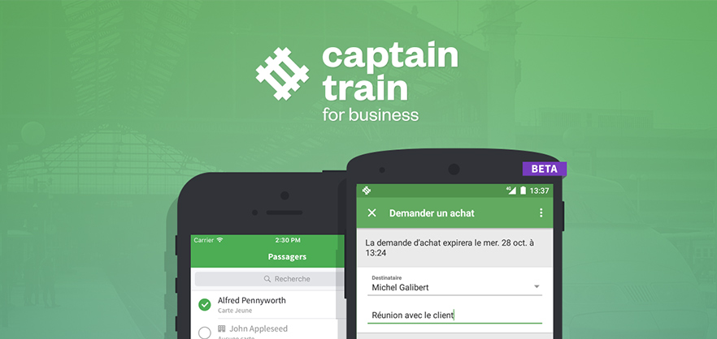

Alven Capital is proud to announce the successful acquisition of one its portfolio companies, Captain Train. The French upstart and its British heavyweight counterpart Trainline have agreed to join forces to offer train tickets across most of Europe. The transaction rewards 5 years of steady growth for Captain Train who has risen to become the go-to alternative to the massive incumbent Voyage SNCF in France and had expanded to offer fares in Germany, Italy and 13 other countries. The service was opened to the public in 2011 after two years in private beta and quickly grew a loyal audience thanks to a streamlined UX and ticket prices free of any booking fees.
Building such a service may seem straightforward but appearances are deceptive. Negotiating access to SNCF reservation systems when it became open to competition was only one part of the challenge: the entire stack had to be built to “talk” to the system and manage bookings. Captain Train’s team also created from scratch the itinerary and fare calculators for each new operator once they started adding Deutsche Bahn, Thalys… As opposed to plane tickets booking systems which were unified starting in the 1960’s, rail systems lived in relative technological isolation until now because of stronger local monopolies. Captain Train effectively built the equivalent of a Global Distribution System for the entire rail industry.
The strategic value of such a deep expertise and integrated systems with partnerships across all of Europe wasn’t lost on Trainline, whose own operations will benefit from Captain Train’s innovative backend to cut on third-party expenses and save years of business development.
1.4 million registered users
The strategic value of such a deep expertise and integrated systems with partnerships across all of Europe wasn’t lost on Trainline, whose own operations will benefit from Captain Train’s innovative backend to cut on third-party expenses and save years of business development.
Captain Train currently has 1.4 million registered users and sells 5,000 tickets daily, for $80 million in transactions processed in 2015. Trainline boasts 4.7 million customers and 21 million monthly visitors leading to $2.3 billion ticket transactions processed in 2015.
The new company will cement its position of European leader and keep working on offering travelers the best booking experience across all networks. The teams and founders will remain with Captain Train and work out of their Paris offices for the foreseeable future.
The value of a huge european partnership
The strategic value of such a deep expertise and integrated systems with partnerships across all of Europe wasn’t lost on Trainline, whose own operations will benefit from Captain Train’s innovative backend to cut on third-party expenses and save years of business development.
We share the same ambition, and it was a natural step for us to decide to work with Trainline. The complementary nature of our offerings and the scope of the markets that we will cover will enable us to reach our shared objective of making rail travel in Europe easier.
Captain Train currently has 1.4 million registered users and sells 5,000 tickets daily, for $80 million in transactions processed in 2015. Trainline boasts 4.7 million customers and 21 million monthly visitors leading to $2.3 billion ticket transactions processed in 2015.The new company will cement its position of European leader and keep working on offering travelers the best booking experience across all networks. The teams and founders will remain with Captain Train and work out of their Paris offices for the foreseeable future.
Captain train for business : a good growth focus
Building such a service may seem straightforward but appearances are deceptive. Negotiating access to SNCF reservation systems when it became open to competition was only one part of the challenge: the entire stack had to be built to “talk” to the system and manage bookings. Captain Train’s team also created from scratch the itinerary and fare calculators for each new operator once they started adding Deutsche Bahn, Thalys…
As opposed to plane tickets booking systems which were unified starting in the 1960’s, rail systems lived in relative technological isolation until now because of stronger local monopolies. Captain Train effectively built the equivalent of a Global Distribution System for the entire rail industry.
The strategic value of such a deep expertise and integrated systems with partnerships across all of Europe wasn’t lost on Trainline, whose own operations will benefit from Captain Train’s innovative backend to cut on third-party expenses and save years of business development.
- Innovative backend
- Third-party expenses
- Save years of business development.
Captain Train currently has 1.4 million registered users and sells 5,000 tickets daily, for $80 million in transactions processed in 2015. Trainline boasts 4.7 million customers and 21 million monthly visitors leading to $2.3 billion ticket transactions processed in 2015.The new company will cement its position of European leader and keep working on offering travelers the best booking experience across all networks. The teams and founders will remain with Captain Train and work out of their Paris offices for the foreseeable future.